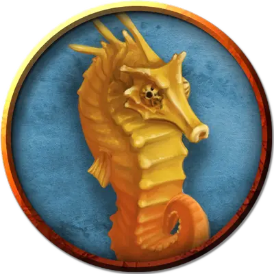

Гигантский морской конек
Giant Sea Horse
Большой Зверь, без мировоззрения

Класс Доспеха 13 (природный доспех)
Хиты 16 (3к10)
Скорость 0 футов, плавая 40 футов
| мод | спас | ||
|---|---|---|---|
| СИЛ | 12 | +1 | +1 |
| ЛОВ | 15 | +2 | +2 |
| ТЕЛ | 11 | +0 | +0 |
| мод | спас | ||
|---|---|---|---|
| ИНТ | 2 | −4 | −4 |
| МДР | 12 | +1 | +1 |
| ХАР | 5 | −3 | −3 |
Чувства пассивное Восприятие 11
Опасность 1/2 (100 опыта)
Бонус мастерства +2
Среда обитания Под водой
Особенности
Атака в броске. Если морской конек переместится как минимум на 20 футов по прямой к цели, а затем в том же ходу попадет по ней атакой тараном, цель получает от атаки дополнительные 7 (2к6) дробящего урона. Если цель — существо, она должна преуспеть в спасброске Силы Сл 11, иначе будет сбита с ног.
Подводное дыхание. Морской конек может дышать только под водой.
Действия
Таран. Рукопашная атака оружием: +3 к попаданию, досягаемость 5 футов, одна цель. Попадание: 4 (1к6 + 1) дробящего урона.
Описание
Так же, как и их младшие родственники, гигантские морские коньки это тихие разноцветные рыбы с длинными телами и изогнутыми хвостами. Водные эльфы тренируют из них скакунов.